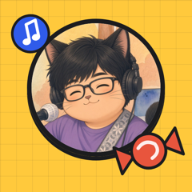

바로환율
도구금액만 넣으면 바로 계산되는 환율
- 나라를 고르면 환율과 계산기가 바로 보여요
- 금액을 넣는 즉시 원화와 외화로 계산돼요
- 관심 통화의 환율 변동을 한눈에 봐요
환율 계산부터 핸드드립 레시피까지, 지미니스가 만든 토스 미니앱 8개예요. 토스 앱만 있으면 따로 설치하지 않고 바로 열 수 있어요.
카드의 토스에서 보기를 누르면 앱 소개 페이지가 열려요. 휴대폰에서는 거기서 바로 토스 앱으로 들어가요.
금액만 넣으면 바로 계산되는 환율
평단가와 손익을 바로 보는 투자 기록
매일 하나씩 만나는 좋은 문장
드리퍼별 핸드드립 레시피
자기계발 영상과 책 요약 모음
다시 찾은 노래와 그 이야기
좋아요로 매기는 채널 순위
나라별 여행 안내와 주요 도시 소개
아직 토스에 출시되지 않은 앱이에요. 출시되면 여기에도 토스에서 보기 링크가 생겨요.
국내 차박지와 축제를 찾는 캠핑카 여행 정보
문자와 성조부터 여행 회화까지, 하루 5분

집 안 물건을 두드려 리듬을 따라 치는 게임
마음에 드는 앱 카드에서 토스에서 보기를 눌러요.
휴대폰이면 토스 앱으로 바로 들어가요. PC라면 화면의 QR을 휴대폰 카메라로 찍어요.
따로 설치하거나 가입하지 않아도 돼요. 토스 앱 안에서 바로 열려요.